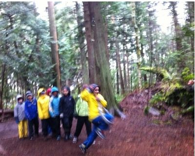

On Inclusion
I spent four days this week as a chaperone for 75 5th graders at Camp Islandwood, where in an incessant Northwest rain we learned about the food cycle, the water cycle, and that “breathable waterproof” fabric is a cruel marketer’s joke. I was at the camp as a general chaperone, but especially to keep an eye on my son Alex who has been in the Autism Inclusion program at John Hay, our local public school, since Kindergarten.
I was saddened to see that despite his personal growth and success in a classroom full of typical peers Alex was still a far outlier in the group. Perhaps due to the unfamiliar environment and lack of routine Alex was often in his own world – thinking his own thoughts and frequently “stimming” by humming or making strange hand motions. The kids clearly liked Alex; they talked to him, included him in games and treated him with respect. But he was too quirky and not quick or engaged enough to keep up with their social interactions.
During the days Alex was part of a field group with 7 girls and 3 other boys who Alex describes as “awesome.” Awesome is a term he defines precisely as being popular and good at sports; traits Alex fervently wishes he had. On hikes these boys established their awesomeness by trying to push each other in the abundant mud or spit backwards over their own heads with consequences variously for the person behind you, your backpack, or your own head.
On the third day our group participated in a team challenge course, where the team has to work together to overcome a physical obstacle. The tasks must seem daunting if, like Alex, you have trouble with social interaction, are uncoordinated and are anxious about your disabilities.
The first challenge was to cross a “lava pit”. In the middle of the pit was a platform – the challenge was to get all of the kids onto the platform at the same time without touching the lava. The only tool was a rope swing that hung halfway across the pit, beyond the reach of even the tallest student. The group wisely rejected Alex’s proposal of throwing the smallest student at the swing and instead held a tall boy’s free hand while he teetered out over the “lava”, grabbed the rope and swung himself across.

One after another the kids put a knee in the loop (knees only, by the safety rule), swung themselves across and pushed the swing back. A few, including Alex, fell into the lava on the way over and had to try again. By the second try everyone was on the platform. Everyone except Alex, who before his second attempt was already near tears and shaking with nervousness. After his second fall, Alex melted down. The other kids were all standing on the platform and Alex started crying and blaming anything but himself. “You told me my knee was in the loop. It’s all about the knee!” The camp guide tried to explain how to grab the rope, but Alex was panicked and inconsolable. He turned to me, but wouldn’t listen, breathing hard, tears running down his face and repeating nonsense. “It’s all about the knee. You told me my knee was in the loop!”
That’s when his classmates stepped in. They walked off the platform and crossed the lava pit. First a girl who told him “It’s OK, I fell too”. In a second another girl and two of the boys came to help. Four kids huddled around him, telling him everything was OK, showing him where to hold the rope and how to put his knee in the loop. They pushed him across the gap where his teammates grabbed him and unloaded him onto the platform. In a minute they had all swung across to the platform and with Alex still sniffling, claimed success.
They did this without eye rolling, without judging or complaining, and certainly without teasing. They did it naturally and with no expectation of praise or reward. Kids who were pushing each other in the mud and laughing about it saw someone in need and came to the rescue. It was no big deal to them. Alex was still embarrassed about his performance, but the kids said, “it was fine Alex, we did great.” The other chaperone and I were near tears to see children being so selfless and admirable, so casually and naturally. They did great - the guide said they were one of the fastest teams he had seen.
I have known for a long time that inclusion in a regular classroom is the best educational option for someone like Alex. There is a complex language of social interaction and like any other language, it’s impossible to learn without being immersed in it. I have also believed that there is a benefit to his classmates, who despite the limited ethnic & cultural diversity in our neighborhood would at least benefit from seeing some neurodiversity. But unless kids have evolved since I was in 5th grade, these kids also learned something else at school and at home. They grew up with someone different and knew well what he needed. And they knew they could provide it. They learned tolerance, empathy and confidence that they could help those in need.
Will the skills of tolerance and empathy help these kids in their academic life? Maybe not. Will they help them in the business world? I’ve dealt with enough CEOs to know that these are not requirements for the job. But if we are trying, as parents and teachers, to grow menschen, people of integrity and honor, then I saw some wonderful evidence of success. So I want to thank John Hay – the teachers and parents and especially the children. You are awesome, not just by Alex’s definition, but by mine.